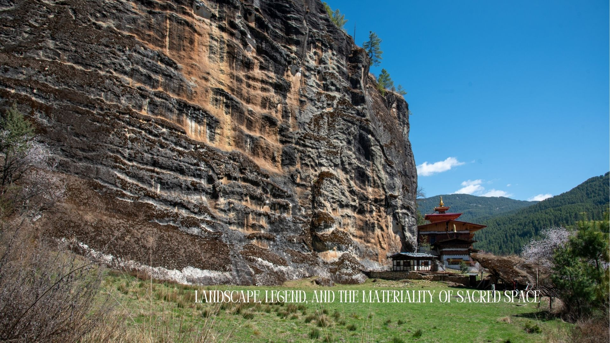
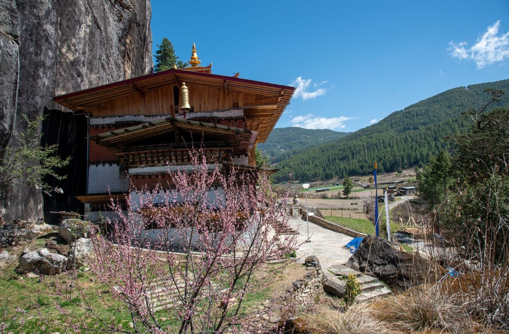
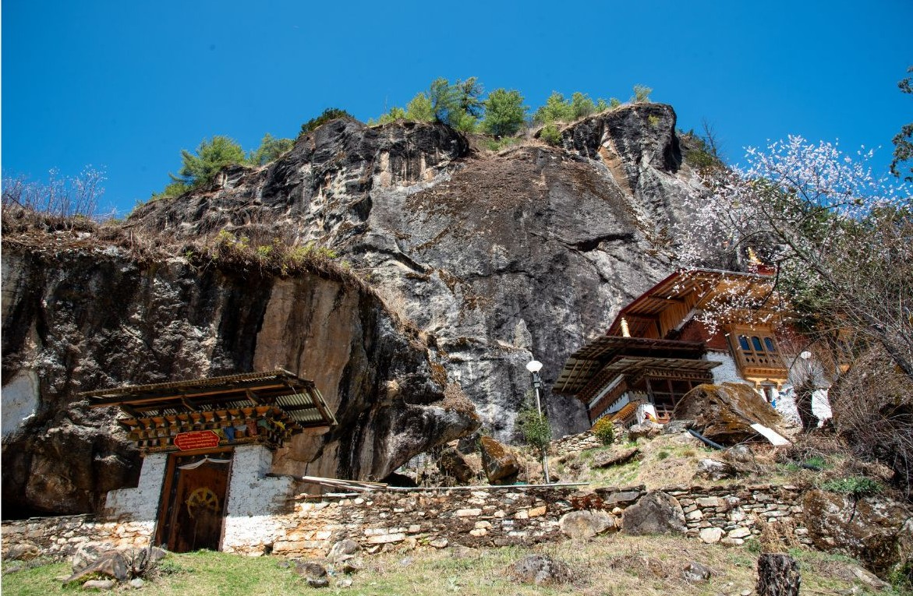
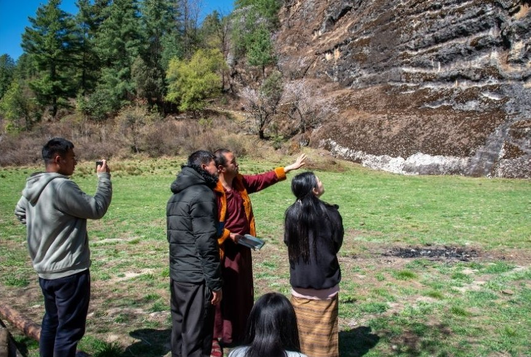
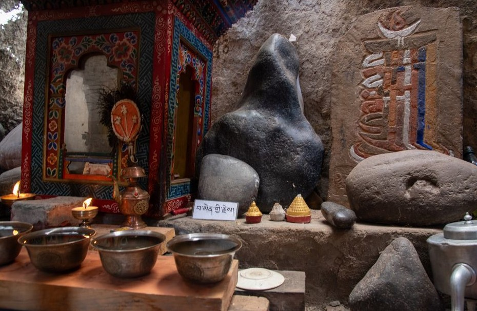
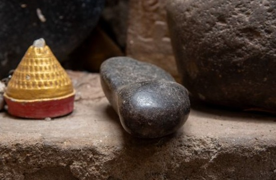
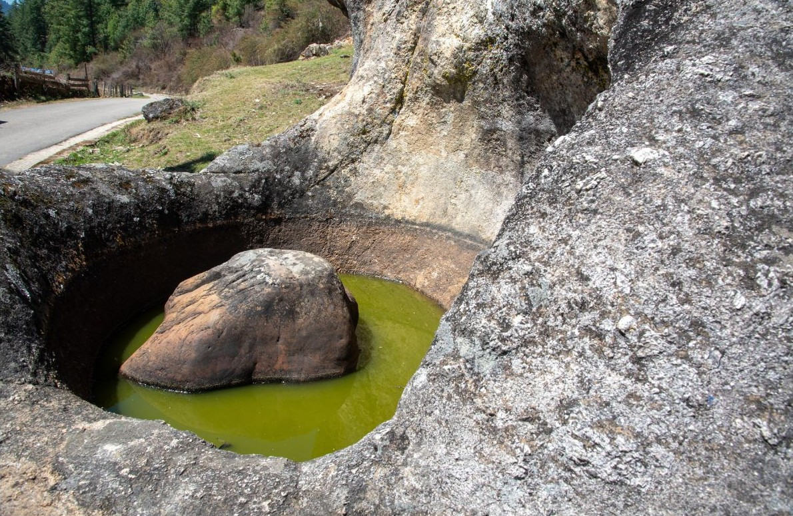
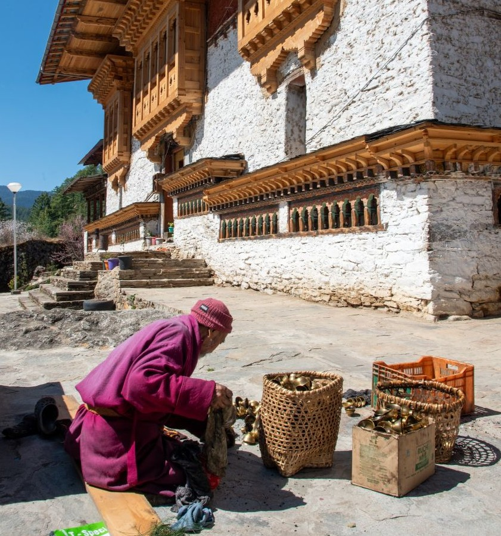
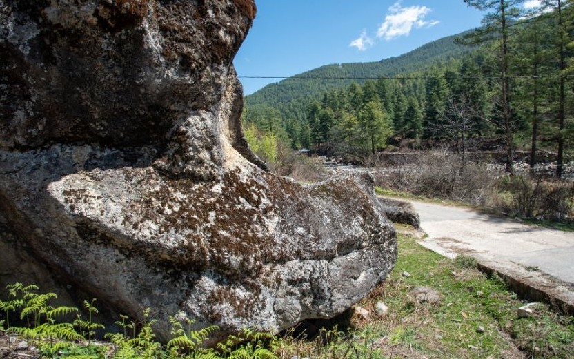
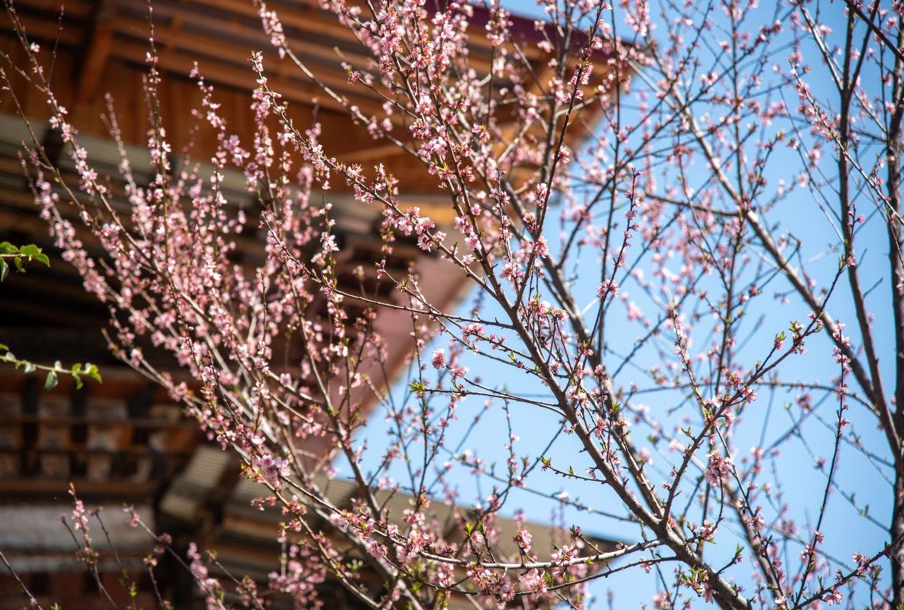

Tang Rimochen Lhakhang, set against a towering rock face in Bumthang, exists at the intersection of landscape, belief, and memory. This photo essay traces that convergence — from the scale of the cliff to the detail of a carved stone.

Embedded within this landscape are accounts of Guru Rinpoche's presence in the 8th century. The site is remembered as a place where he subdued male and female spirits, leaving behind signs of this encounter on the rock itself. Among these signs is the so-called tiger stripe imprint, not immediately visible from the immediate foreground but said to emerge clearly when viewed from across the river. The act of seeing here is therefore contingent on position, both physical and interpretive.
Explore More
Set against a towering rock face in Bumthang, Tang Rimochen Lhakhang exists at the intersection of landscape, belief, and memory. The site does not present itself as a constructed monument alone; rather, it is the rock itself that carries the weight of meaning. The Lhakhang appears almost secondary, nestled, adapted, and in dialogue with the cliff that defines it.
Explore More
The rock dominates the visual field. Its surface is marked by layers of erosion, tonal shifts, and natural formations that invite interpretation. According to local understanding, these are not incidental features. The cliff is read as a sacred form, divided into symbolic halves, one associated with peaceful deities and the other with wrathful manifestations. This duality is not visually imposed but perceived through long-standing religious interpretation. From certain vantage points, the rock is also believed to resemble a tiger's head, linking it directly to the site's name and to narratives of Guru Rinpoche.
Explore More
Tang Rimochen Lhakhang cannot be understood through a single frame. It is a site that resists reduction where geology, architecture, ritual practice, and oral history converge. The photographs trace this convergence: from the scale of the cliff to the detail of a carved stone, from the openness of the valley to the enclosed space of a shrine. Each image contributes to an understanding that is partial, yet cumulative, shaped in large part by narratives articulated by Palden Dorji, the caretaker monk, whose accounts provide critical insight into the site's significance. What emerges is not a definitive reading, but a recognition of how meaning is constructed over time, through stories, through repeated acts of devotion, and through the enduring presence of the landscape itself.
Explore More
The interior spaces of the Lhakhang and its surrounding shrines shift the experience from landscape to intimacy. Small ritual objects, butter lamps, and offerings are arranged in a manner that suggests continuous use rather than display. Stones believed to bear imprints of footprints, of forms, of presences, are not isolated artifacts but part of an ongoing devotional environment. The black stone identified as a deity, and the impressions associated with Khandro Yeshi Tshogyel and Guru Rinpoche's mount, extend the sacred narrative into tangible forms. These objects are not explained through visual clarity alone; their meaning is sustained through oral transmission.
Explore More
The stones within the Lhakhang's precinct carry impressions that are not read as geological accident. Each mark — a footprint, a tongue, a form pressed into rock — is identified through oral knowledge passed between generations. The meaning of these objects is not self-evident from their appearance; it is conferred through the act of telling. To see them without that account is to see shape without significance.
Explore More
The site is also layered with histories of discovery. From the 14th century onwards, various tertöns are said to have revealed hidden treasures from within the rock. These accounts position the cliff not only as a natural formation but as a repository — holding texts, statues, and sacred objects intended to be revealed at specific moments in time. The story of Pema Lingpa, guided by a dream to this very location, situates Tang Rimochen within a wider network of sacred sites in Bumthang, where revelation is tied to both destiny and place.
Explore More
Architecturally, the Lhakhang reflects phases of rebuilding and care. While its origins remain uncertain, it is understood to have existed in a smaller form before being expanded in the 19th century under Trongsa Poenlop Tshokey Dorji. The structure today retains this layered history — its wooden elements, whitewashed walls, and integration with the rock face indicating both continuity and adaptation. The presence of caretakers and the traces of daily activity and ritual preparation reinforce that the site remains active rather than preserved in stasis.
Explore More
The surrounding environment further situates the Lhakhang within a lived landscape. Seasonal cycles are evident: flowering trees in spring, shifting light across the rock surface, and the movement of bees that inhabit the cliff. These bees, historically harvested under specific rights, introduce another dimension of human engagement with the site, one that is both practical and regulated by tradition. The village of Dha-zur, visible from the Lhakhang across the valley, shares this landscape — the Lhakhang is not a museum; it is embedded in the daily spatial experience of those who live beside it.
Explore More
Tang Rimochen Lhakhang remains a living site, where the material presence of the rock, the built structure, and the surrounding landscape continue to be shaped by belief and practice. The narratives associated with the site are not fixed; they are sustained through retelling, observation, and ritual engagement. In this sense, the Lhakhang is not only a place of historical significance but an active space where past and present remain closely intertwined, allowing meaning to persist through both memory and everyday interaction.
Explore More